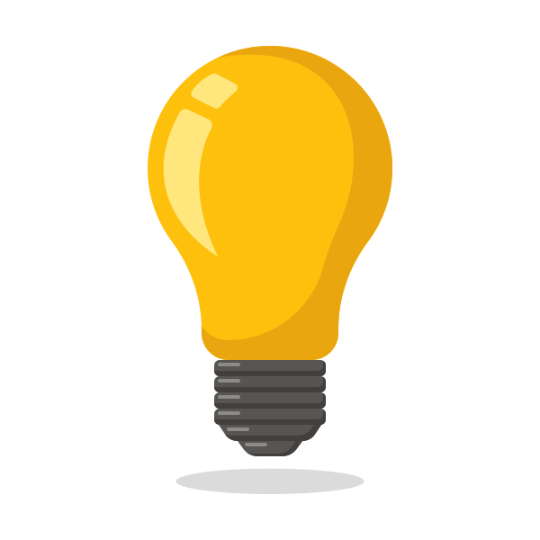
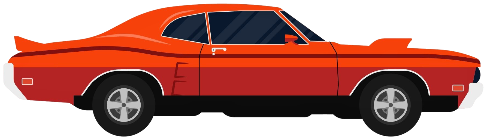
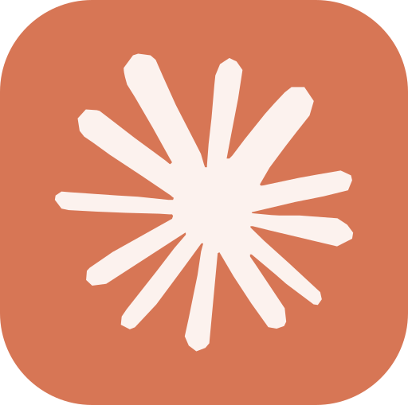
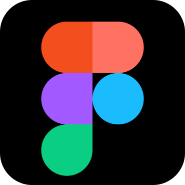
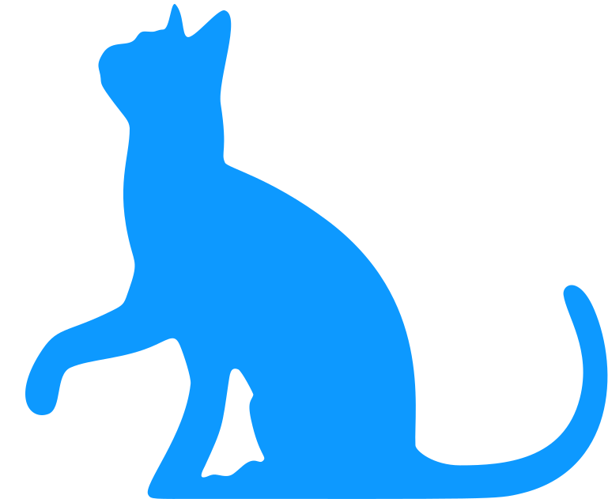

4+ years designing products across TikTok Shop analytics, betting platforms, and the systems underneath them.
Curiosity is what drives how I work.


It shows up early. I ask why a flow works the way it does, or whether a feature is solving the right problem, before anyone startsbuilding. That's where the real problems are still cheap to fix.
That's also why I've spent the last year bringing AI into my process


not as a shortcut, but as another way to dig deeper into problems, explore more possibilities, and get from an idea to something tangible faster.
Because good ideas only matter when they work, I collaborate closely with developers and stakeholders to turn them into products people can actually use.

I'm usually figuring out something
a producta prototypea cameraa piece of wooda new toola weird ideaa gamea problem